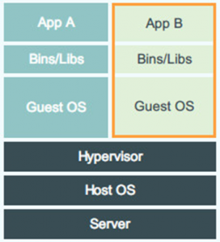

与大数据平台开发#
发现问题#
场景一 在大数据平台的开发过程中，开发人员通常需要自己有一套集群，以便反复测试自己负责的模块，难道要给每人都配几台机器？ 场景二 测试组需要反复的安装整个平台以便发现问题，而一旦安装就很难再让 Linux 系统恢复到一个干净的状态，或者说需要花费很多时间，那如何快速地恢复系统环境？ 场景三 测试人员在测试中发现了一个 Bug，需要保存现场，可测试还要继续，怎么办？ 场景四 如何把一个部署好的大数据平台快速地迁移到其它地方？
传统解决方案#
解决这个问题第一个想到的当然是用虚拟机了，而之前也确实用的是虚拟机，但这种方式不能完美的解决以上问题，比如：
- 虽然它也可以迁移，但这并不是它所擅长的，不够灵活，很笨重
- 虚拟机的快照可以保存当前的状态，但要恢复回去就得把当前正在运行的虚拟机关闭，并不适合频繁保存当前状态
- 虽然可以给每个人都分配几个虚拟机用，但它是一个完整的系统，本身需要较多的资源，底层物理机的资源很快就被用完了，我们需要寻找其它方式来弥补这些不足
Docker 技术的引入#
Docker 项目的目标是实现轻量级的操作系统虚拟化解决方案，换句话说，它可以让我们把一台物理机虚拟成多台来使用，而且它还可以保修改、完整的迁移到其它地方、性能损耗小等等好处，可以说很好解决了我们的问题。 那为什么不用虚拟机？ 因为它比虚拟机更轻便，Docker容器中不包含操作系统，启动一个Docker容器只要几秒种的时间，在一台物理机上可以创建几百上千个容器，而虚拟做不到。 下面是 Docker 与虚拟机的实现原理图
Docker 设计图#
VM 设计图#

可见容器是在操作系统层面上实现虚拟化，直接复用本地主机的操作系统，而传统方式则是在硬件层面实现。
环境的搭建#
在实践过程中，部署一套可用的 Docker 环境，必需做好以下前提工作：
- 搭建私有镜像仓库，用来统一存放构建好的镜像
- 搭建一个安装包仓库，用来存放我们发布的各种版本的大数据安装包等
- 使多个物理机上的 Dcoker 容器可以相互通信，官方已存给出了方案
为平台定制基础镜像#
- 即然要在Docke容器内安装我们的平台，那就需要一个统一的 Linux 系统做为我们的 Dcoker 容器，比如 Ubuntu、CentOS 等发行商都会发布自己的Docker基础镜像到 Docker Hub 上，如果 Docker Hub 上恰好没有你需要的镜像，也可以自己制作。
- 比如用 CentOS 做为我们的基础镜像，那么先把它 pull 下来
[user@host1 ~]$ docker pull centos:6.8
Using default tag: latest
latest: Pulling from ubuntu
8aec416115fd: Extracting [================> ] 16.78 MB/50.31 MB
695f074e24e3: Download complete
946d6c48c2a7: Download complete
bc7277e579f0: Verifying Checksum
...- 然后我们用这个镜像创建一个容器，并在里面配一些我们的大数据平台依赖的参数，比如 ntpd、httpd 服务等等，最终生成我们平台专属的基础镜像。
[user@host1 ~]$ docker run -tid --name build -h build centos:6.8 bash # 创建一个容器
f5e71cd81252a3563a03ad8daee81047b62ab5d892ebbfbf71cf53415f29c130
[user@host1 ~]$ docker exec -ti build bash
[root@build ~]$ yum install ntpd # 定制自已的配置
...
[root@build ~]$ exit
[user@host1 ~]$ docker commit build my-centos # 保存为自已的镜像
ha256:71cd81252a3563a03ad8daee81047b62ab5d892ebbfbf71cf53415f29c130950- 这是很关键的一步，有了它以后，所有人员可以随时创建一个自己需要的Linux环境出来，以便在其内进行产品的研究和实验，且每个人的环境互不相干，当容器内的环境被破坏后，可以删掉再创建，这样一来，场景一和二所遇到的问题也就迎刃面解。
将已经部署好的集群做成镜像#
我们可以把已经部署了集群的容器保存成多种镜像，如：只包含了 Hadoop 的集群、同时包含 Hadoop、Zookeeper、Hbase 的集群，或安装了所有组件的集群等等，然后上传到私有仓库，其它人需要的时候，直接启动自已需要的集群就可以了，因为免去了部暑与配置等步骤，因而大幅度提高了工作效率，也提高了产品迭代速度。
[user@host1 ~]$ docker images
REPOSITORY TAG IMAGE ID CREATED SIZE
registry.io:5000/hadoop-base latest 1bc6664767de 4 weeks ago 3.764 GB
registry.io:5000/hadoop-standalone3100094120-node1 latest 54468c2b0de1 3 weeks ago 11.64 GB
registry.io:5000/hadoop-all3100089120-node3 latest f334355d92e2 4 weeks ago 6.407 GB
registry.io:5000/hadoop-all3100089120-node2 latest 3ff0ab7bc121 4 weeks ago 6.21 GB
registry.io:5000/hadoop-all3100089120-node1 latest ac9bdb8165b5 4 weeks ago 11.32 GB
...上图是已经做好的镜像，上图中共三种类型的镜像：
- 第一个是基础镜像
- 第二个是单节点版的大数据集群，所以只有一个镜像
- 最后三个是已经安装了大数据平台的镜像，因为是分布式，所以共有三个
镜像的修改与保存#
Docker 提供了 commit 功能，可以将一个正在运行的容器保存起来，假如在测试过程中遇到一个 Bug 并且需要先保存下来，执行一条简单的命令即可，如：
docker commit container_name image:v2在以后需要复现的时候用这个镜像创建容器即可，像下面这样
docker run -tid --name c1 image:v2 bash但注意，并不是所有状态都能被保存下来，它只保存文件层面的状态，不能保存内存中的状态，所以再次启动容器的时候，容器内的所有服务都已经变成了停止状态，需要再手动启动一次，这样就导致有些类型的 Bug 不能复现。 不过欣慰的是，Docker 官方打算在后面的版本中加入 checkpiont 功能，它可以保存容中的所有状态，这样就可以完整地复现 Bug，这个新功能的用法就像下面这样：
[user@host1 ~]$ docker checkpoint container1 c1 # 创建检查点
c1
[user@host1 ~]$ docker checkpoint ls container1 # 查看
CHECKEPOINT NAME
container1 c1
[user@host1 ~]$ docker start --checkpoint c1 container2 # 恢复检查点这个功能对很多人来说，绝对是个好消息！！
脚本化部署、监视、删除#
当然了，每个人都不应该把过多的精力放在怎么使用 Docker 的问题上，这样会为团队带来额外的工作量，最简单的办法当然是把所有重复性的工作脚本化，向每个人提供最简便的使用接口，只需要一条简单的命令就可以创建自己想要的集群环境，当不需要的时候一条命令即可删除，这样即降低了学习成本又解决了容器管理问题。 脚本化的实现应该考虑到几个方面：
- 多种类型集群的创建
- 记录每个集群的所属者，容器所属的物理机，创建时间等等
- 可实时查看所有容器的运行状态，物理机资源使用情况
- 删除指定的集群
结语#
其实现在已经有很多开源的 Docker 容器管理框架，但需求都是复杂多变的，并不能适用所有人的情况，比如我们的大数据平台就需要为每个容器做端口映射、内含大数据组件的镜像在启动后还要做 Hostname 与 IP 映射等等，这些都需要手动去做。
在实践过程中，遇到了很多问题，目前虽还算不上成熟，但已经使原本部署与配置很复杂的大数据平台变的简单快速，让一部分人感到很方便，当然了，我们还在不断的完善中。